Революция в юридическите услуги: Norm Ai събра 120 млн. долара за развитие на „агентско право“
В официално изявление [1] американският стартъп Norm Ai съобщи за успешното привличане на 120 милиона долара в рамките на инвестиционен кръг от Серия C. Финансирането е водено от фонда Khosla Ventures – първият институционален инвеститор в OpenAI – и оценява младата компания на 1,2 милиарда долара, с което тя официално достига статут на еднорог. В кръга се включват още водещи финансови институции и инвеститори като Blackstone, Bain Capital Ventures, Craft Ventures, Coatue, Vanguard, New York Life и TIAA. С новия капитал общата сума на привлечените от компанията средства от основаването ѝ преди по-малко от три години надхвърля 260 милиона долара.
Основната цел на Norm Ai е изграждането на т.нар. „агентско право“ (agentic law) чрез интегриране на законодателни изисквания и регулации директно в софтуерни агенти с изкуствен интелект.
Новият модел на работа: Norm Law
Ключов елемент в съобщението на компанията е развитието на Norm Law, LLP – асоциирана с платформата правна кантора, която оперира изцяло върху технологията на Norm Ai. Кантората използва специализирани AI агенти за извършване на правна работа под надзора и калибрирането на опитни адвокати.
Този хибриден модел позволява радикална промяна в икономиката на сектора. За разлика от традиционните юридически кантори, чиито приходи зависят от броя изработени часове, Norm Law предлага ценообразуване, изцяло обвързано с крайния резултат от услугата. Според ръководството на компанията, това премахва противоречивите стимули на пазара – както при софтуерните доставчици, чиито бизнес модели са обвързани с обема на използваните токени, така и при класическите адвокатски дружества, които печелят от удължаването на работния процес [1].

Изображение: Svetni.me / Авторско изображение
Авторитетен екип от правото и технологиите
Кантората Norm Law се ръководи от Майк Шмидбергер, бивш председател на изпълнителния комитет на една от най-големите световни кантори Sidley Austin. Партньори в дружеството са бивши водещи юристи от Sidley Austin, Ropes & Gray, Kirkland & Ellis, Simpson Thacher, Davis Polk, Skadden и други водещи глобални компании, както и главният юрист на Bain Capital Ventures.
Обединяването на софтуерни инженери и утвърдени юристи има за цел да изгради доверие у корпоративните клиенти. Към момента технологиите на Norm Ai се използват от финансови институции и компании, управляващи общо над 30 трилиона долара активи. Платформата захранва както вътрешните регулаторни процеси на организациите, така и дейността на правните им екипи.
AI агенти, които супервизират други AI агенти
Освен за стандартни правни анализи, софтуерните решения на Norm Ai се внедряват и в нова роля – като независими надзорници на други системи с изкуствен интелект в рамките на големи предприятия. Тъй като компаниите все по-често поверяват критични и регулирани процеси на автономни агенти, системите на Norm Ai извършват проверки в реално време дали тези агенти спазват законовите и корпоративните стандарти [1].
„В едно общество, в което изкуственият интелект става все по-агентен, нашето предизвикателство е да изградим интерфейс между новите технологии и най-висшето проявление на човешките ценности – правото“, коментира Джон Ней, основател и главен изпълнителен директор на Norm Ai.
С навлизането на пазара на нови играчи като Legora и Harvey [2], секторът на правните технологии навлиза в етап на зрялост, където битката се измества от базовите езикови модели към специализирани, регулаторно съвместими AI агенти и нови икономически модели за предоставяне на услуги. Новият капитал от Серия C ще бъде използван за разширяване на обхвата на правните области, разработване на нови супервизиращи функции и привличане на допълнителни технически и юридически кадри [1].
Източници:
[1]: Norm Ai Raises $120 Million at a $1.2 Billion Valuation Led by Khosla Ventures to Deliver the Full-Stack Model for Legal AI - PR Newswire
[2]: AI law startup Norm raises $120M, hits unicorn valuation - TechCrunch